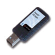
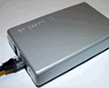
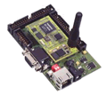
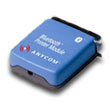

Anycom
Bluetooth USB-100 Adapter
Product
Information
Purchasing
Information (Mobile Planet)
Note: This product has been
tested with the Atinav SDK. The Atinav SDK is used in Chapters
5, 6, 7, and 9.
|
 |
BlipSystems
BlipNet
Product
Information
Note:
This device is used in Chapter 11.
|
 |
Smart
Network Devices Micro BlueTarget
Product
Information
Note:
This device is used in Chapter 10.
|
 |
TDK
Palm Bluetooth Development Kit
Product
Information
Note:
This device is used in Chapter 5 and Appendix C, and works
with the Atinav SDK and the Rococo Palm Bluetooth DK.
|
|
| |
|
|
Belkin
Access Point with USB Print Server
Product
Information
Purchasing
Information (Belkin)
This
multifunction device works great as a network access point
for your LAN capable Bluetooth devices. However, this device
has an extra benefit as a USB Print Server! This device has
two (2) USB ports to allow you to wireless print to traditional
(non-Bluetooth) USB printers.
Supported Profiles:
- Serial Port
- LAN Access
- PAN
|
|
Anycom
PM-2002 Printer Module
Product
Information
Purchasing
Information (Mobile Planet)
Note: This device is the perfect
tool to Bluetooth enable a traditional (i.e. non-Bluetooth enabled)
printer with a parallel port connector.
As decribed in Chapter 1, you can use this adapter to create
a wireless print server (see p. 6). This device supports the
Serial Port Profile for printing documents. |
 |
| |
|
| |
|
| |
|